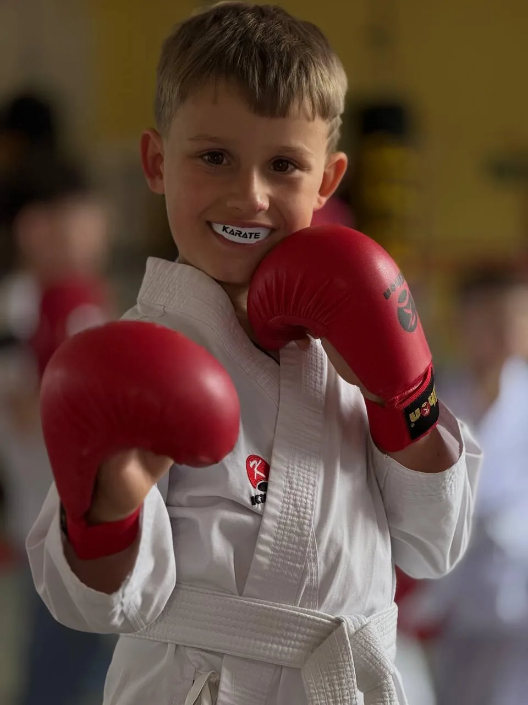
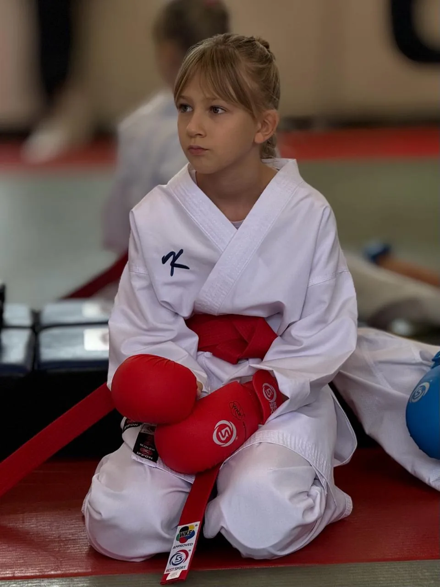
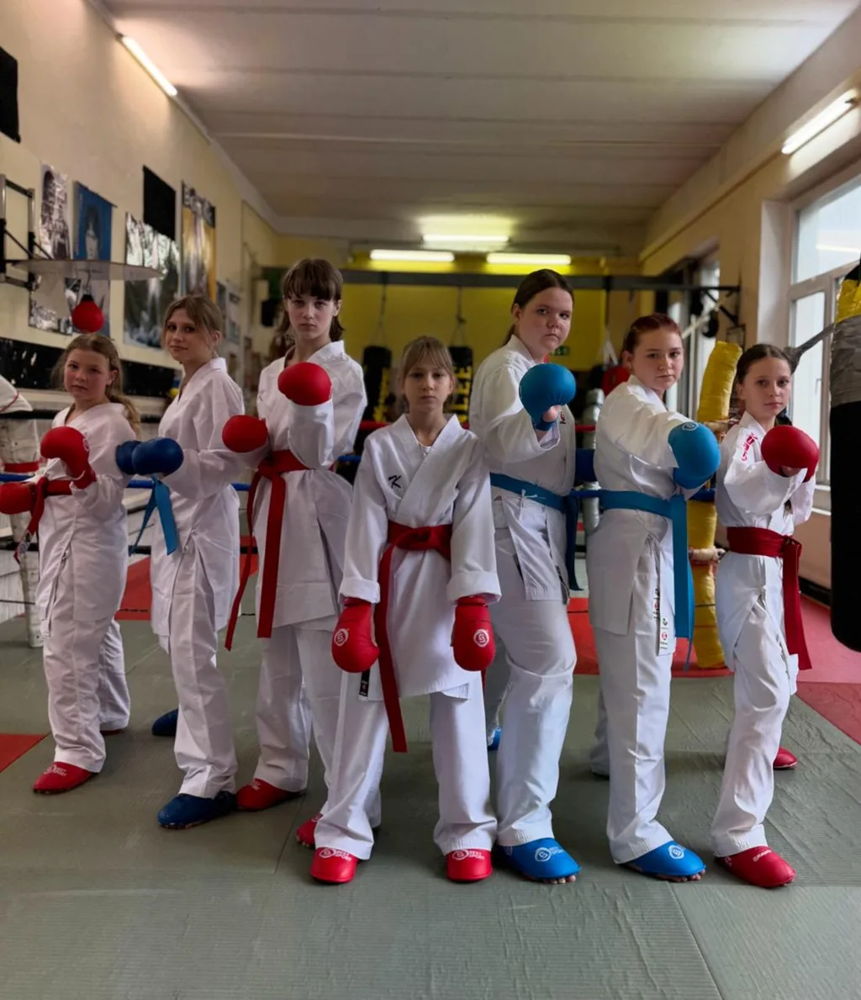
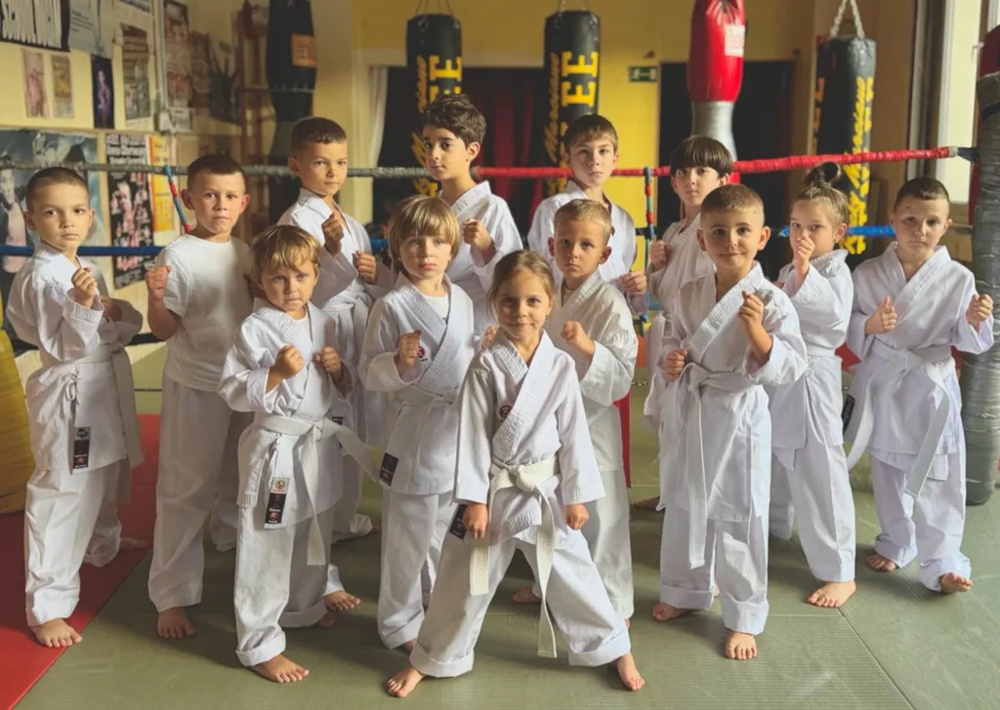
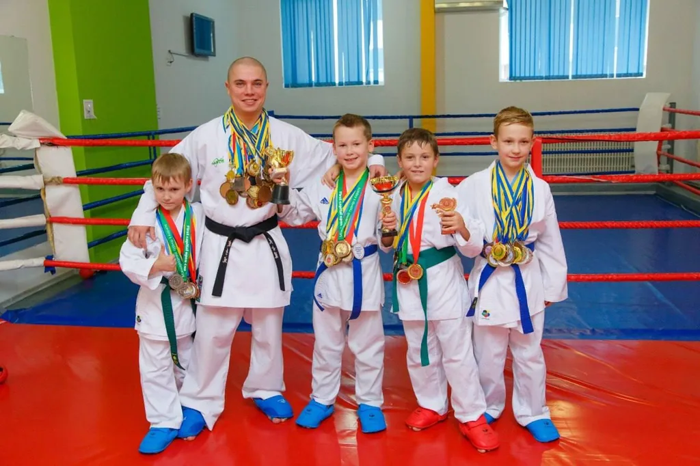
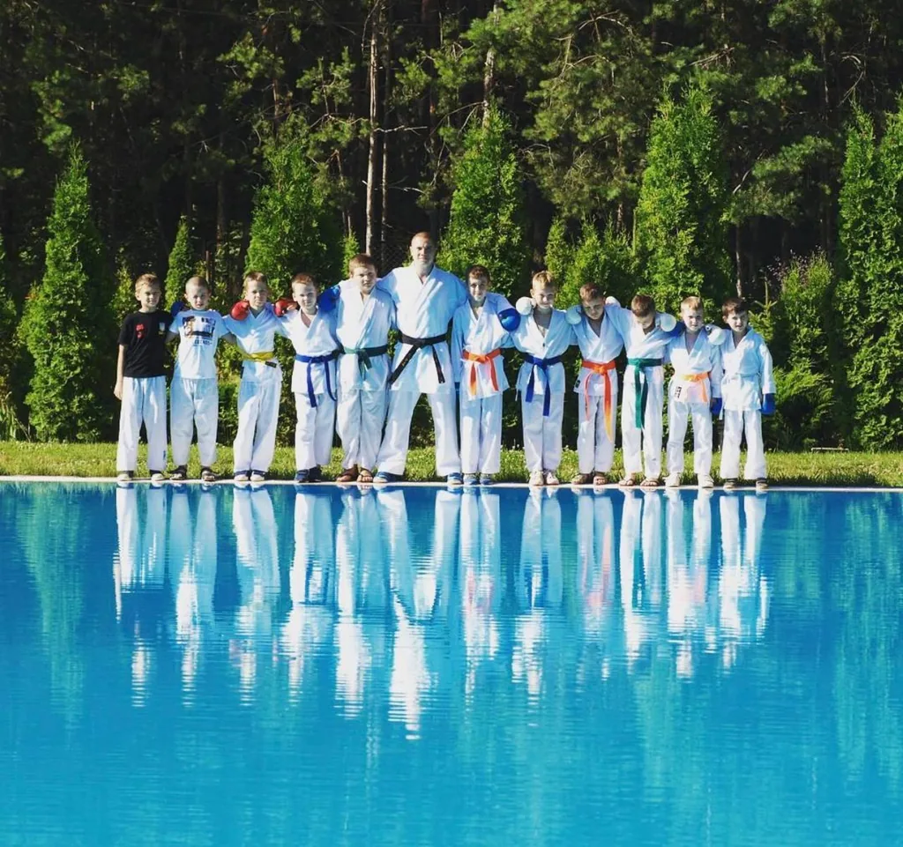
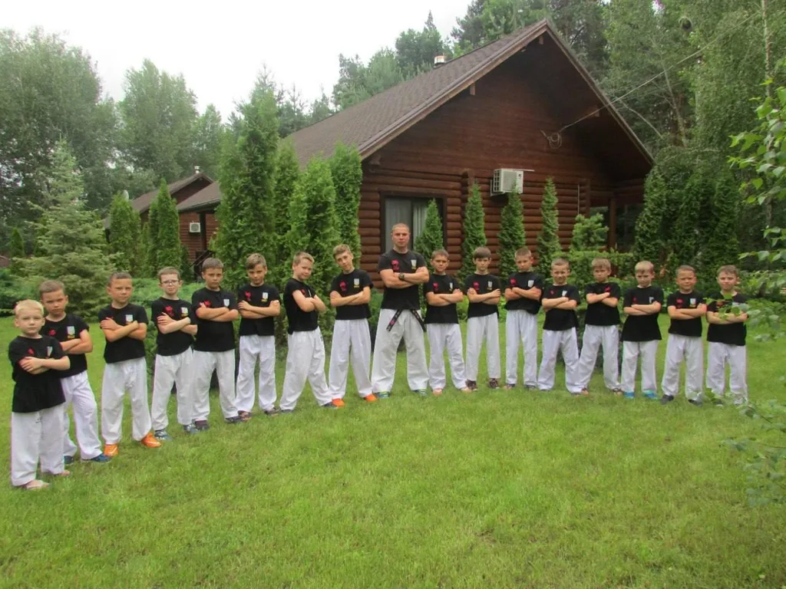

Впевненість у собі
Діти вчаться вірити в себе та сміливо приймати нові виклики.
↗
Захопливі тренування, підтримка тренера та радість від нових досягнень.
РУХ
РАДІСТЬ
РОЗВИТОК
Ми тренуємо техніку. Ми формуємо характер.
Діти вчаться вірити в себе та сміливо приймати нові виклики.
↗Чіткі цілі та регулярні тренування розвивають зосередженість, силу й витривалість.
↗Повага й підтримка перетворюють учнів на сильну команду.
↗
Дитячі тренування у Вупперталі поєднують техніку карате, рух, зосередженість і повагу одне до одного. Ми враховуємо вік та рівень підготовки й підтримуємо кожну дитину на її шляху. Для дітей зі спортивними цілями є підготовка до змагань.
Переглянути розклад ↗
Тренування за адресою Uellendahler Straße 23, 42107 Wuppertal. Зазначено місцевий час Вупперталя.

| Понеділок | |
|---|---|
| Середа | |
| П’ятниця |

Відповідну групу узгодимо з вами з урахуванням віку й підготовки дитини. На безкоштовне пробне тренування потрібен попередній запис.
Записатися безкоштовно ↗Досвід із 1993 року, педагогічна освіта й увага до кожного учня.

Олександр Шелест із Танакою Такенорі · архівне фото

Сертифікат Української федерації карате від 26.05.2021 підтверджує 1 дан на ім’я Олександра Шелеста та реєстрацію в UKF. Перша атестація на дан, згідно з біографією тренера, відбулася 2004 року.
Переглянути сертифікат (PDF)У карате з 1993 року. Понад 20 років тренерського досвіду.
Олександр Шелест поєднує понад 30 років досвіду в карате, педагогічну освіту та індивідуальний підхід до учнів. На тренуваннях він приділяє особливу увагу правильній техніці, фізичному розвитку, дисципліні та повазі.
Мета тренера — не лише навчити техніки карате, а й допомогти дітям розвинути впевненість у собі, силу волі та наполегливість. Кожен учень вчиться долати труднощі й рухатися вперед у власному темпі.
Карате — шлях до самодисципліни, поваги та постійного вдосконалення.
Тренування. Змагання. Спільнота.
Крок за кроком вчимося нового.
Займаємося з інтересом і задоволенням.

Працюємо над технікою та впевненістю в собі.

Вчимося бути уважними й готуватися до наступного кроку.
Тренуємося разом і підтримуємо одне одного.

Спілкування та повага — частина кожного тренування.

Разом вчимося, зростаємо й відкриваємо світ спорту.
Тренер і учні з медалями та кубками.

Спортивні миті разом із тренером.

Спільні спогади поза межами залу.
Тренер і учні разом на природі.

Карате об’єднує та допомагає знаходити друзів.

Перші кроки в карате за підтримки друзів.

Відпрацьовуємо стійку та готуємося до нових завдань.
Вправи на розтягування — частина підготовки.
Юні учениці опановують базову стійку.
Познайомтеся зі школою Shelest і подивіться, чи підходить наш підхід вашій дитині. Пробне тренування безкоштовне. Час заняття узгодимо з вами заздалегідь.
Напишіть у WhatsApp або зателефонуйте. Вкажіть вік дитини та розкажіть, чи займалася вона карате раніше.
Займаємося щопонеділка, щосереди та щоп’ятниці: молодша група о 17:00, старша о 18:00. Заздалегідь узгодьте відповідну групу.
На безкоштовному пробному тренуванні ви зможете скласти враження про заняття та поставити свої запитання.
Пробне тренування безкоштовне. Вартість регулярних занять можна уточнити під час спілкування зі школою.
Спочатку домовтеся про пробне заняття через WhatsApp або за телефоном +49 157 30872694. Вкажіть вік дитини та її досвід тренувань.
Ми враховуємо вік та рівень підготовки. Напишіть нам, щоб підібрати групу й дізнатися, коли можна почати заняття.
Uellendahler Straße 23, 42107 Wuppertal. Понеділок, середа та п’ятниця: молодша група — 17:00, старша — 18:00. Пробне заняття узгодьте з нами заздалегідь.
На техніці карате, русі та повазі одне до одного. Тренер приділяє увагу кожній дитині й підтримує її інтерес до спорту.
Так. Для дітей зі спортивними цілями передбачена можливість готуватися до змагань, удосконалювати техніку та фізичну підготовку.
Невелика гра на реакцію: допоможи каратисту перестрибнути перешкоди й набери якомога більше очок.
Твій результат: 0
Наступний крок — безкоштовне пробне тренування з карате у школі Shelest у Вупперталі.
На комп’ютері — пробіл. На телефоні — дотик до ігрового поля. Escape — пауза.
Натисни «Почати гру». До запуску гра не працює.
Зал розташований за адресою Uellendahler Straße 23. Запишіться на безкоштовне пробне тренування через WhatsApp або телефоном.
Понеділок · Середа · П’ятниця
17:00 — Молодша група
18:00 — Старша група

Безкоштовне пробне тренування для вашої дитини — за попереднім записом.
Написати у WhatsApp ↗Зателефонувати: +49 157 30872694